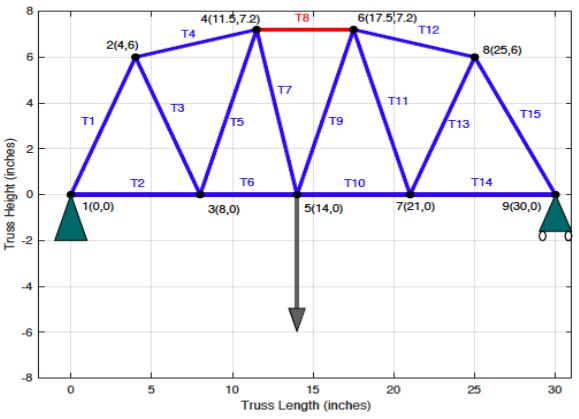

GOAL The purpose of this project was to practice the process of designing and analyzing truss structures that will both fit the client’s specifications and can be feasibly built. BACKGROUND A simple truss structure is made up of 2-force member elements that are joined at their ends. Elements within the structure are either in tension or compression. Such a truss fails when the tension or compression of an element exceeds the buckling strength of that element, causing the element to bend. To help achieve a more realistic design, several constraints were put in place, such as achieving the best design with cost and durability in mind, corresponding accurately to an engineer’s decisions. DESIGN PROCESS The design process started with researching common types of truss bridges that would satisfy the requirement that all members be joined at their ends. These included the Pratt, Howe, and Warren Trusses. The Warren Truss was of particular interest because its design reduces the overall weight of a bridge by entirely removing the vertical beams seen in the Pratt and Howe models. Both a physical model and iterative use of MATLAB to evaluate truss designs were used to find a final design that would support a max. load while also reducing the amount of materials and therefore associated cost. PHYSICAL MODEL A model was built using acrylic bars and tape (shown right). This was to determine the compressive strength of truss members (individual acrylic bars). One aspect of this project was developing a consistent method of securing the truss members together. A sketch of this process is shown below. The outside surfaces of adjacent members A and B are taped together using two 2” pieces of strapping tape. The inner surfaces of these members are taped using another two pieces of strapping tape using the method shown (top). A two inch piece of strapping tape is wrapped, sticky side up, around the corner of the set square (a). The edge of the set square is used to apply the tape in the corner formed by members A and B (b), and is then pressed along the length of each member to smooth out the ends (c). Two pieces of 4” strapping tape are applied (perpendicular to the length of the members) over the ends of the outer/inner tapes. MATLAB MODEL The truss designs checked were able to sustain a minimum weight of 32 oz, and were under the $270 maximum project budget, satisfying the durability and cost components outlined by the client. The MATLAB figure output is shown below. Writing a MATLAB program, allowed rapid calculation of internal member and reaction forces, cost, load/cost ratio, critical member, buckling strength and maximum theoretical load. FINAL DESIGN The final design borrows the ‘zigzagging’ structure of a Warren truss, and combines it with a camelbacked structure similar to the curvature of a catenary arch. Catenary arches can be seen in nature and are often used in architecture for their strength.  The ‘curve’ formed by the upper members of the final design approximates a catenary arch. The goal of including such an arch in this truss design was to find a self supporting structure, able to hold both its own weight and a max. applied load. Note: Max. load was reported as a range based on the range of acrylic bar strengths experimentally found, plus a FOS of 1.5